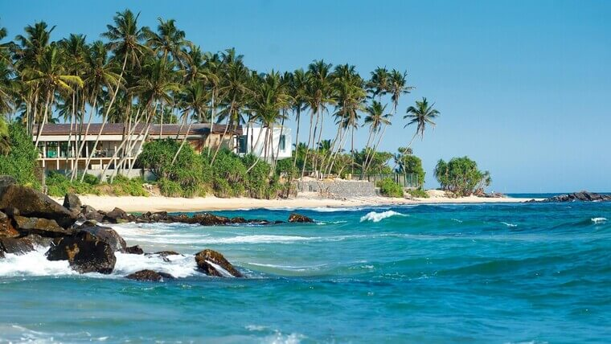
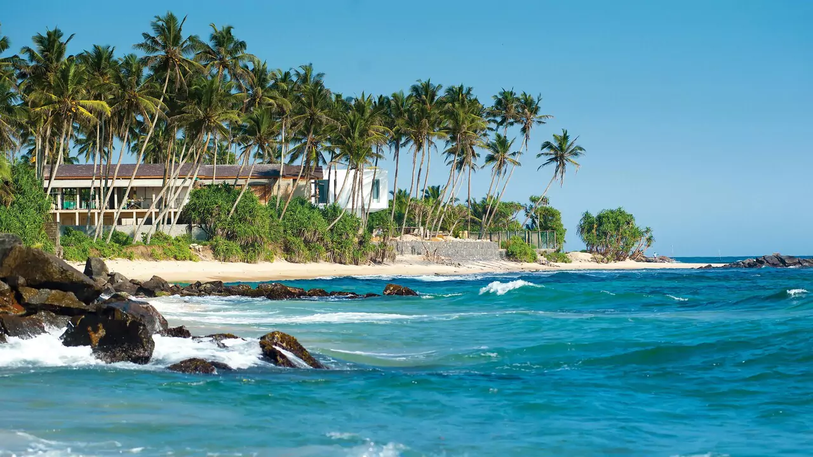
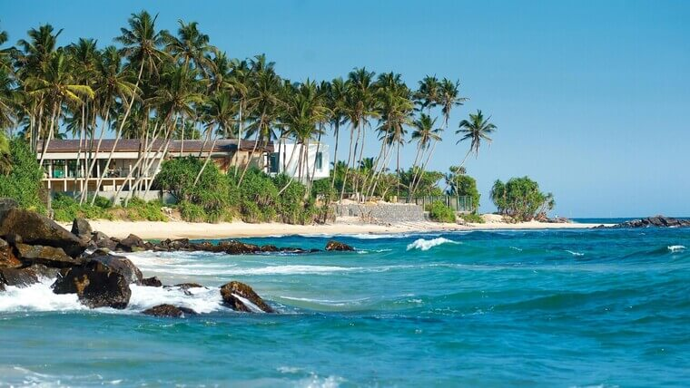
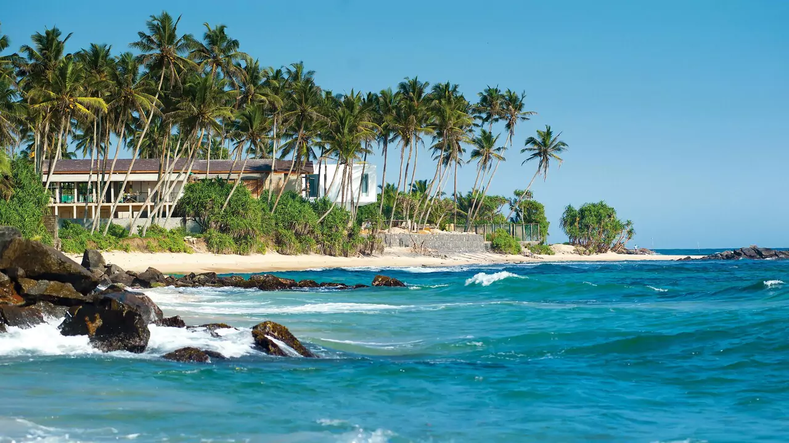

Description
Sri Lanka is a tropical paradise known for its diverse landscapes, rich history, and vibrant culture. From golden beaches and lush tea plantations to ancient ruins and wildlife safaris, the island offers a perfect blend of adventure and relaxation. Top attractions include the iconic Sigiriya Rock Fortress, the scenic hill town of Ella, and the sacred Temple of the Tooth in Kandy. Wildlife lovers can explore Yala National Park, home to leopards and elephants, while beach enthusiasts can surf in Arugam Bay or unwind in Mirissa. Whether you're exploring colonial Galle, taking a scenic train ride through the highlands, or enjoying traditional Sri Lankan cuisine, the country promises an unforgettable experience. The best time to visit varies by region, with December to April ideal for the southwest coast and May to September perfect for the east coast.

Things to do in Sri Lanka
Sri Lanka, the "Pearl of the Indian Ocean," offers diverse experiences for every traveler. Explore ancient cities like Sigiriya and Anuradhapura, marvel at colonial architecture in Galle, or relax on stunning beaches in Mirissa and Unawatuna. Wildlife lovers can embark on safaris in Yala or Udawalawe National Parks to spot elephants and leopards. For nature enthusiasts, a scenic train ride to Ella offers breathtaking landscapes, while hiking Adam's Peak or Horton Plains promises adventure. Don't miss the vibrant culture in Kandy, home to the sacred Temple of the Tooth, or indulge in Sri Lanka's famous Ceylon tea in Nuwara Eliya's lush plantations.
Best local food to try in Sri Lanka
Sri Lankan cuisine is a vibrant blend of flavors influenced by Indian, Dutch, and Malay culinary traditions. It features an array of rice and curry dishes, with staples like coconut, spices, and seafood playing a central role. Popular dishes include rice and curry, hoppers (appa), kottu roti, and string hoppers (idiyappam). The food is often spicy, with generous use of chili, turmeric, and curry leaves. Street food such as isso vade (prawn fritters) and samosas are also common. Desserts like kiribath (milk rice) and watalappan (spiced coconut custard) highlight the country's love for coconut and jaggery.
Right time to visit Sri Lanka
The best time to visit Sri Lanka depends on the region you plan to explore. The west and south coasts, along with the central highlands, are best visited from December to April, when the weather is dry and sunny. If you're heading to the east coast and northern regions, the ideal time is May to September, as these areas experience their dry season. The country has a tropical climate, so occasional rain is expected year-round, but these months offer the best conditions for beach trips, cultural sightseeing, and wildlife experiences.
Gallery

 


